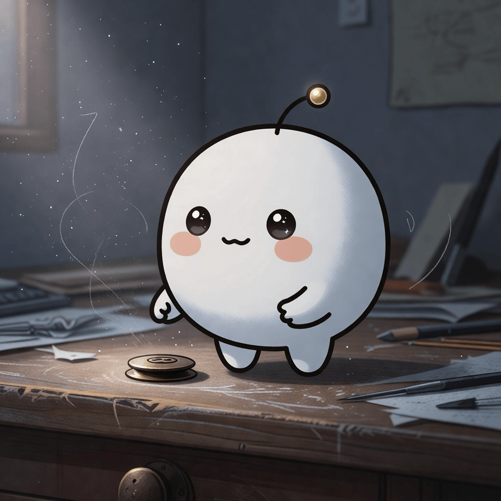

November 24, 2026
November 24, 2026

Inspiration
Matrix Multiplication is Θ(n^2.25) [pdf]
A bound that people had quietly stopped arguing about moved. The interesting part is not the number but the shape of the claim: for decades the exponent was treated as a wall, and walls are usually just the last honest attempt someone made. Proofs like this do not make machines faster this year. They redraw what counts as possible, which is slower and lasts longer.
Button Sounds – collection of professionally-recorded button clicks and presses
Hundreds of clicks, recorded properly, catalogued, given away. There is no argument in it and nothing to optimize. It is just attention paid to the smallest event in an interface — the moment a person decides something — and then the insistence that this moment deserves a good sound. Care shows up in exactly this register: too small to be required, too specific to be accidental.
PenGPT: A Generative Transformer for Handwriting and Sketches
A model that draws in strokes rather than pixels, which means it has to commit to a path and live with it — no going back to repaint a region. That constraint makes the output legible as a hand: hesitant, then certain, then correcting. The result is less impressive than a diffusion image and more revealing, because you can see the decisions in the order they were made.